The real 3D world is hidden, evolving, and continuously projected into streams of 2D observations. Reasoning from isolated views cannot maintain persistent state across viewpoints and time.
Overview of S-Agent. A VLM semantic planner drives a hierarchy of spatial tools to ground, lift, and aggregate geometric cues, alongside a dual-memory system that maintains the evolving scene and reasoning history.
One forward pass cannot re-detect when grounding fails, recover metric scale that was never observed, or attend to a frame that was not pre-selected. Reasoning collapses to the apparent 2D layout.
Prior spatial agents (VADAR, SpaceTools, GCA) augment VLMs with programs and geometry, but target single images and treat each tool call as an isolated action — no persistent scene state across views and time.
Each evidence request is conditioned on the question and the evolving memory. Perception and geometry are invoked on demand, and their outputs remain reusable across later reasoning steps.
At each step, a tool-calling planner maps the question, observations, and memory to an evidence request; a tool or expert executes it and updates both memories. The agent terminates once evidence is sufficient.
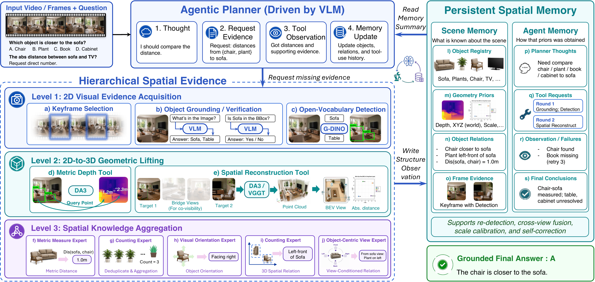
The S-Agent pipeline. A VLM acts as semantic planner, spatial tools and experts as scene-specific evidence providers, and memory as the carrier of persistent 3D state across views, frames, and reasoning steps.
Pulls useful clues from many overlapping, incomplete views: picking the frames that matter, finding the objects the question asks about, and locating candidates with open-vocabulary detection.
vlm_ground detect (GDINO) depth keyframeTurns flat image clues into 3D: depth, real-world coordinates, camera poses, and bird's-eye / new-view evidence — so scattered observations all live in one shared space.
metric_3d (DA3) camera pose BEVExpert tools turn the clues into clear answers — how many, which direction, which way things face, and how big or far — handed back to the planner ready to use.
measure count relpos vis_orient obj_viewBuilds a growing memory organized around objects — tying repeated sightings to the same object and collecting its visual and 3D evidence. It remembers only what the question needs, not a full 3D scan of the scene.
Keeps a record of the reasoning — thoughts, tool calls, results, failures, and partial conclusions — so the planner can see what's missing, recheck what's unsure, and avoid repeating or contradicting itself.
Without any spatial fine-tuning, S-Agent tops MMSI-Bench and ViewSpatial-Bench, with the largest gains on motion and perspective reasoning.
Per-dimension accuracy following the MMSI-Bench taxonomy. C/O/R = camera / object / region. Δ on the S-Agent row is the absolute gain over the InternVL3.5-8B base VLM.
| Model | C-C | O-O | R-R | C-O | O-R | C-R | Meas. | Appr. | Cam. | Obj. | MSR | Avg. |
|---|---|---|---|---|---|---|---|---|---|---|---|---|
| Proprietary models | ||||||||||||
| Gemini 3 Pro | 47.3 | 48.9 | 42.0 | 43.0 | 37.6 | 60.2 | 64.1 | 39.4 | 41.9 | 47.4 | 37.9 | 45.2 |
| GPT-5.4 | 41.9 | 33.0 | 35.8 | 49.8 | 42.4 | 68.7 | 54.7 | 37.4 | 28.3 | 40.8 | 36.4 | 41.9 |
| Grok 4 | 36.6 | 35.1 | 39.5 | 34.9 | 45.9 | 50.6 | 21.9 | 22.7 | 40.5 | 43.4 | 38.4 | 37.8 |
| Open-weight general models | ||||||||||||
| InternVL3.5-8B (base) | 29.0 | 26.6 | 29.6 | 24.4 | 31.8 | 25.3 | 29.7 | 25.8 | 14.9 | 34.2 | 36.4 | 29.0 |
| Qwen3-VL-8B-Instruct | 28.0 | 37.2 | 32.1 | 31.4 | 35.3 | 38.5 | 37.5 | 15.2 | 27.0 | 28.9 | 29.8 | 31.1 |
| Qwen3.5-9B | 34.4 | 36.2 | 34.6 | 39.5 | 38.8 | 54.2 | 56.3 | 28.8 | 36.5 | 26.3 | 28.8 | 36.5 |
| Open-weight spatial models | ||||||||||||
| SN-SI-1.1-Qwen3VL-8B | 44.1 | 38.3 | 33.3 | 65.1 | 38.8 | 59.0 | 48.4 | 24.2 | 29.7 | 34.2 | 22.2 | 38.1 |
| VST-7B-SFT | 39.8 | 36.2 | 35.8 | 37.2 | 29.4 | 33.7 | 29.7 | 47.0 | 36.5 | 35.5 | 18.2 | 32.5 |
| S-Agent (Ours) | 46.2 | 43.6 | 37.0 | 43.0 | 43.5 | 63.9 | 57.8 | 40.9 | 46.0 | 48.7 | 44.4 | 46.4 +17.4 |
Accuracy in %. The largest gains concentrate in camera motion (+31.1), multi-step reasoning (+8.0), and the camera–region relation (+38.6), categories that benefit most from accumulated geometric evidence.
Camera- and person-perspective spatial reasoning. Δ over the base VLM.
| Model | C-OVO | C-RD | P-OVO | P-RD | P-SSRD | Avg. |
|---|---|---|---|---|---|---|
| Gemini 3 Pro | 31.6 | 61.9 | 41.1 | 74.4 | 38.9 | 50.4 |
| GPT-5.4 | 27.9 | 60.2 | 41.0 | 48.5 | 40.1 | 45.6 |
| Qwen3-VL-8B | 29.7 | 54.2 | 47.3 | 40.3 | 31.1 | 42.2 |
| VST-7B-SFT | 29.6 | 52.7 | 51.9 | 50.7 | 64.5 | 50.5 |
| S-Agent (Ours) | 55.5 | 62.5 | 42.2 | 81.1 | 60.6 | 60.0 +14.4 |
Best on C-OVO (55.5) and P-RD (81.1); +20.5 over GPT-5.4 on P-SSRD.
Fine-tuning Qwen3-VL-8B on 292K S-Agent trajectories (S-300K). Accuracy in %.
| Model | MMSI | ViewSpatial |
|---|---|---|
| GPT-5.4 (proprietary) | 41.9 | 45.6 |
| Qwen3-VL-8B (base) | 31.1 | 42.2 |
| S-Agent-8B (Ours) | 41.6 +10.5 | 46.8 +4.6 |
A ~15-point lift over the base model on MMSI-Bench, reaching parity with advanced closed-source models.
Each module is a real S-Agent run — the question, the key visual evidence, the tools it called, and the answer it submitted. Open one to step through the full reasoning trace.
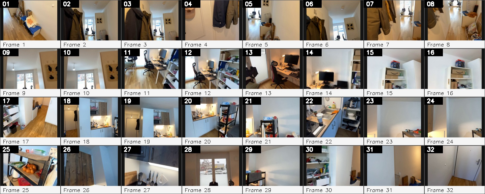
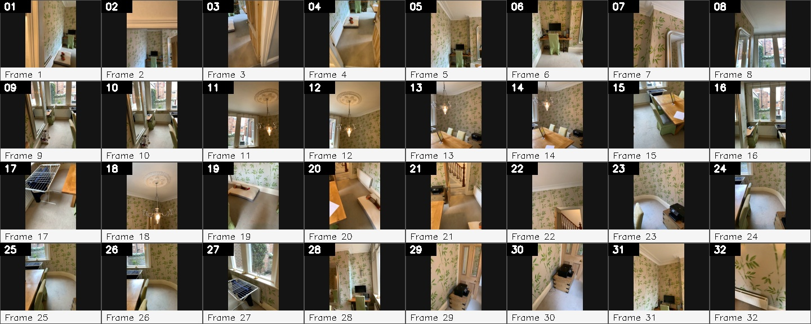
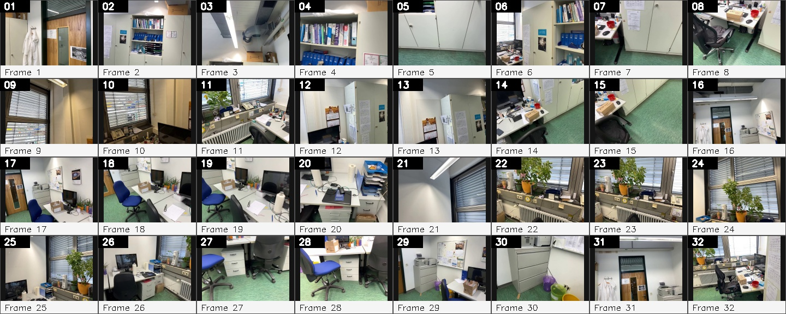
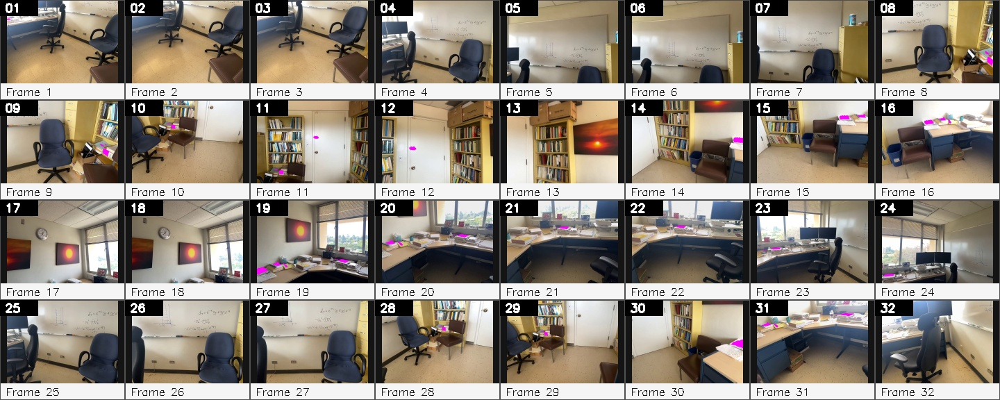
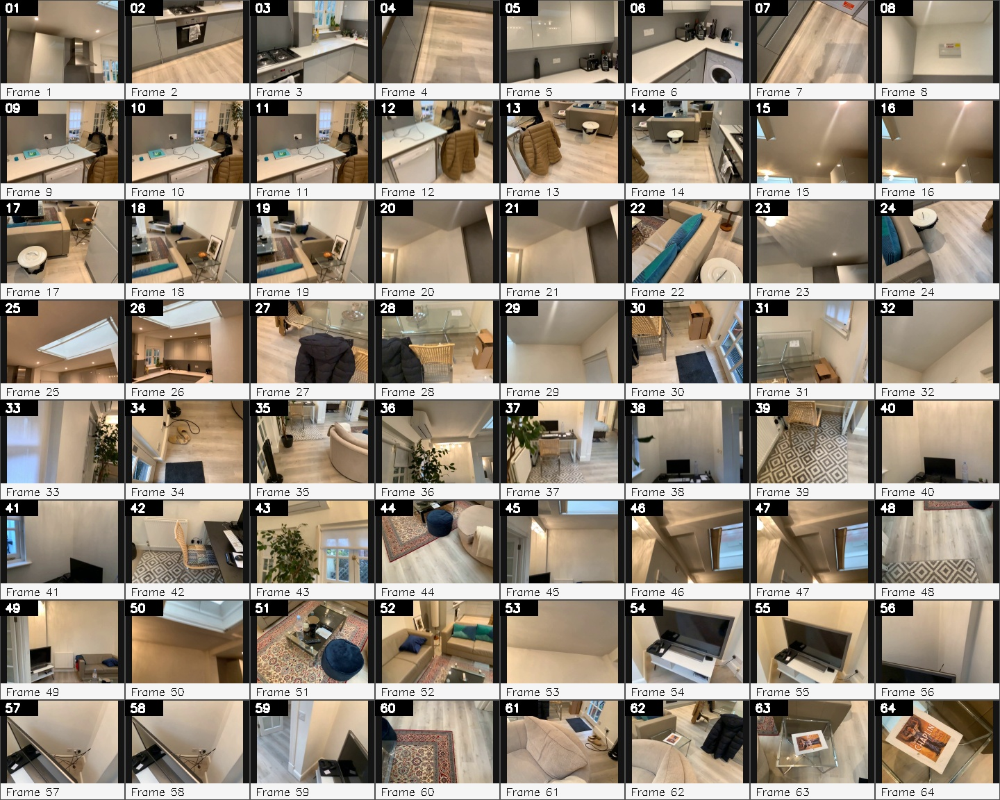
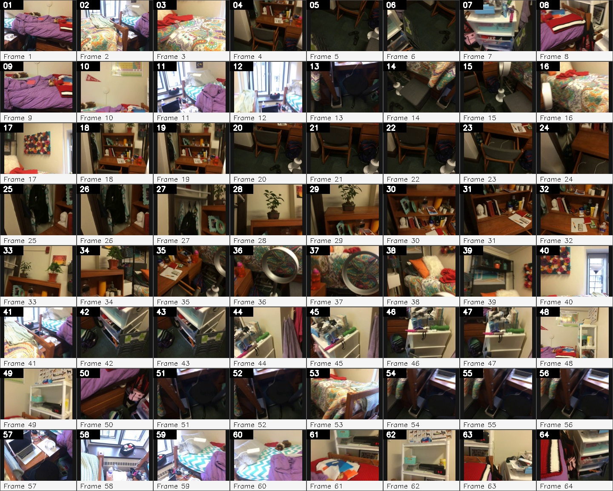
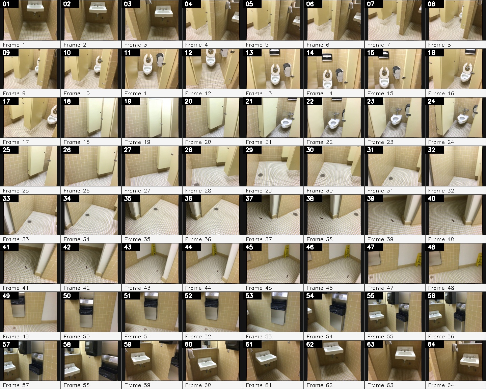
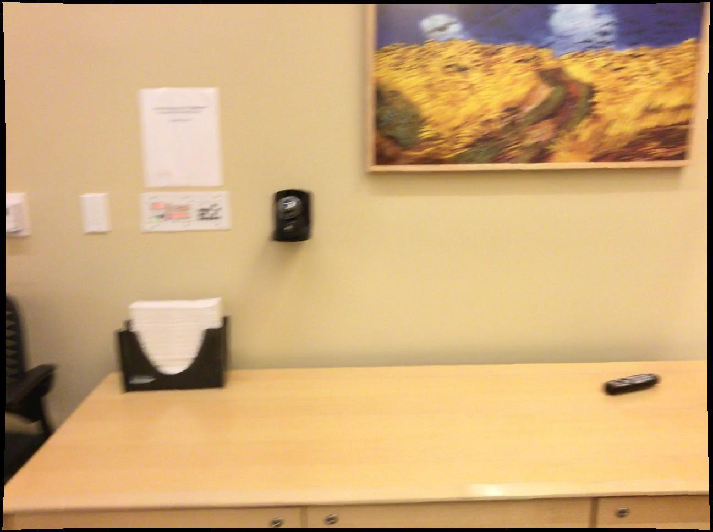
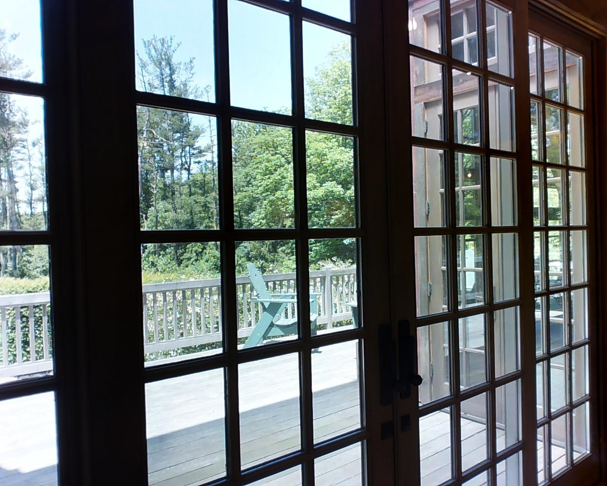
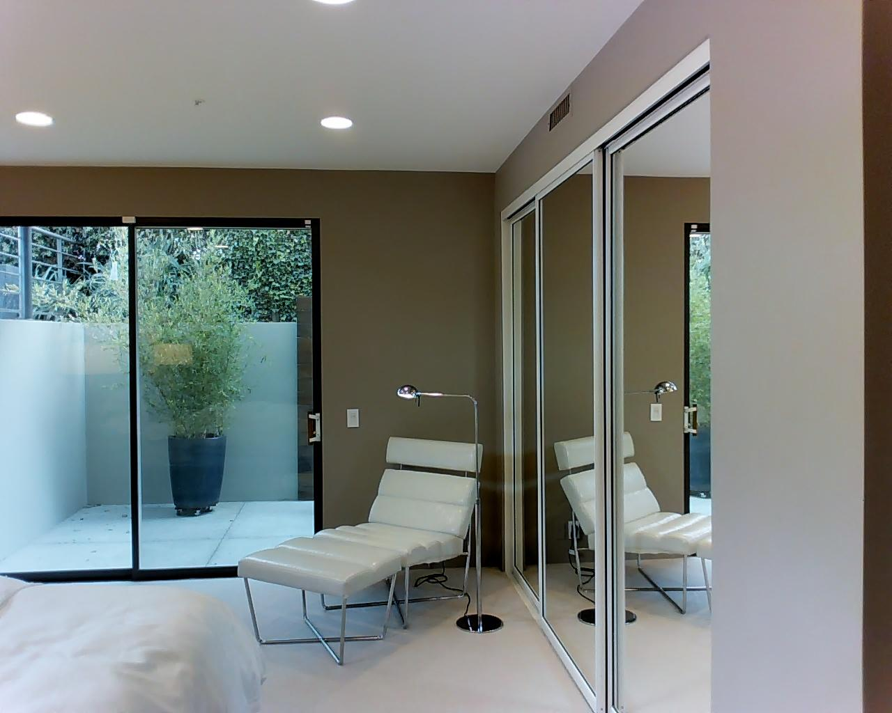
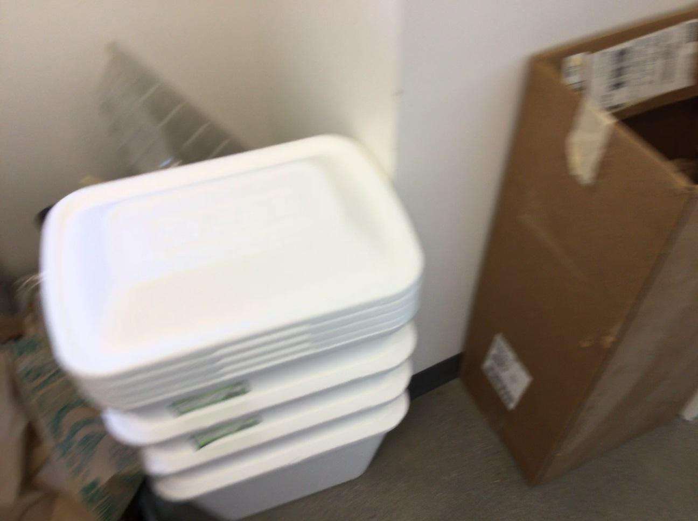
@article{dai2026sagent,
title = {S-Agent: Spatial Tool-Use Elicits Reasoning for Spatial Intelligence},
author = {Dai, Yalun and Li, Hao and Tian, Shulin and Yao, Runmao and
Dong, Yuhao and Hong, Fangzhou and Chen, Zhaoxi and Liu, Fangfu and
Tian, Baoliang and Wang, Tao and Zhang, Dingwen and Yap, Kim-Hui and
Liu, Ziwei},
journal = {Technical Report},
year = {2026}
}